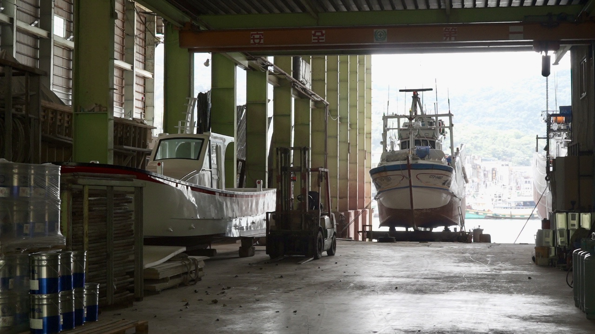
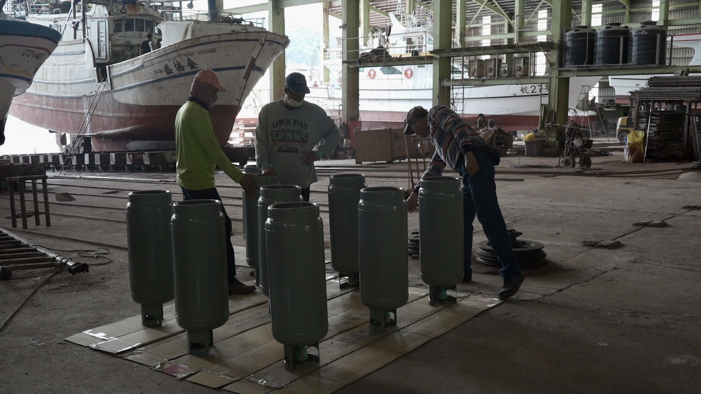
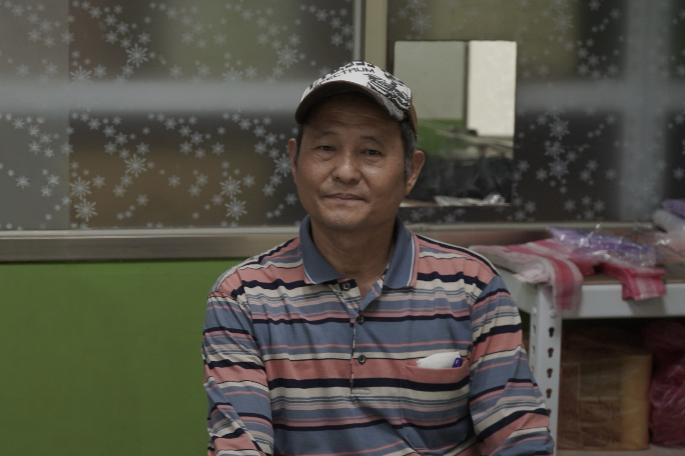

南方澳漁港裡的造船廠：全福與港口的日常
龍德造船廠與全福造船廠，是蘇澳港目前具代表性的兩家造船廠，相比於龍德造船廠的大型特殊船舶和軍艦建造，全福造船廠更貼近南方澳漁港的日常。這裡沒有高速巡防艇或大型工業設備，取而代之的是漁船、海釣船及娛樂船長年進出港口的身影。對南方澳來說，全福不僅僅是一個造船廠，更是港口長年存在的維修基地，許多船隻從全福落成後，就一直在這裡進行維修和保養，而船長、船東與師傅之間也因多年的合作建立起深厚關係。
走進全福造船廠，映入眼簾的是停放在岸邊的船體、等待整修的船殼，以及空氣中瀰漫的淡淡樹脂氣味。與現代化大型船廠相比，這裡的工作節奏更貼近當地漁港的生活，船隻什麼時候進港、什麼時候需要維修、哪艘船最近需要重新整理，幾乎都和港口的日常息息相關。
在全福造船廠工作近四十年的游峯政師傅說。從年輕時投入造船工作至今，他長年負責船舶建造與維修，也見證了南方澳漁港造船產業的興衰與變化。
如今的南方澳，真正還能進行大型上架船維修的地方已經不多了，全福幾乎成為漁港裡最後的重要維修場所。很多漁船在靠岸後，都需要對船底進行重新整理、修補船體和整理結構，這些工作都依賴全福完成。對漁民而言，全福不只是修船廠，更像是港口背後不可或缺的一部分。
近年來隨著漁業模式的改變，全福造船的重心也逐漸從傳統漁船轉向海釣船和漁樂船。游師傅坦言：「現在比較多是海釣船、漁樂船，漁船反而少很多了。」過去以捕魚為主的漁船數量逐漸減少，取而代之的是專門為載客海釣和休閒娛樂而設的船隻，反映出整個港口產業的轉型。
過去南方澳靠漁業養活許多人，但隨著漁業資源減少、政策限制增加，以及年輕人口外流，港口的工作型態也在逐漸改變。儘管如此，全福造船依然留在港邊，陪著那些還在出海的人，共同維持港口的運作。
從木船到FRP：全福造船廠的工作現場

游師傅進入造船業時，木造船的時代其實已經逐漸結束，FRP纖維船則開始成為主流。早期的木船需要定期修補縫隙和進行防水處理，加上木材成本提高，因此逐漸被FRP材料取代。FRP其實就是玻璃纖維強化塑膠，通常會直接稱作「塑膠船」。
建造一艘FRP船舶的流程相當繁瑣，首先要完成設計圖，接著進行造模、拋光、上蠟、噴漆、基層施工，再到最後組裝，每個步驟都需要大量人力與豐富的經驗。
船舶並不能一次性大量生產，即使是相同尺寸的船，不同船東也可能會有不同需求，有些人喜歡簡單的線條，有些則會要求彩繪、特殊配置或獨特的隔艙設計，因此每一艘船其實都帶有一定程度的客製化。
游師傅提到，在FRP施工中最辛苦的一部份是化學材料帶來的刺激性，樹脂與硬化劑混合後會產生強烈的氣味，對於某些體質比較敏感的人，會出現頭暈的情況，甚至造成皮膚過敏。尤其在密閉空間施工時，空氣不流通，氣味會更加刺鼻，玻璃纖維本身也容易引起皮膚發癢，因此施工人員必須做好防護措施，也必須習慣長時間待在這樣的工作環境裡，很多老師傅幾乎長年都穿長袖施工，即使在悶熱的夏天也不例外。
雖然現在已經有輔助施工的設備了，但仍然有很多細節必須仰賴人工處理，因為船體本身充滿彎曲的角度和客製化需求，很難實現完全自動化，因此對全福而言，造船依舊是需要手工經驗的行業。
從學徒開始：游師傅進入造船業的四十年

1988年時，游師傅透過鄰居的介紹進入造船廠工作，從學徒開始做起。那時的他對未來並沒有特別的規劃，只是單純想找一份工作，卻沒想到這一做，就是四十年。
剛進入造船廠時，他最先接觸的是研磨工作，從材料的打磨和拋光開始，然後逐步學習FRP施工與造模技術。游師傅坦言很多技術並沒有固定教材，而是透過觀察老師傅的實際操作，一點一滴吸收學習。
游師傅住在冬山，這四十年來，他幾乎每天都往返南方澳工作，從山邊到海邊，他體驗了兩種截然不同的生活環境，這也逐漸成為他生活中的一部分。儘管不是南方澳土生土長的，但多年來在港口工作的經歷，也讓他對這裡產生了深厚的情感。
即使不是在南方澳出生長大，他卻把人生大半時間都留給了這裡，見證了港口的變化，也看著自己從學徒一路成為老師傅。這句話聽起來平淡，卻流露出許多老一輩職人的共同特質，他們鮮少談論夢想，也不太會特別強調自己的辛苦和付出，而是在長時間的工作中，慢慢把技術融入日常生活的一部份。
修船的人與港口的人情：南方澳的合作關係
在南方澳，許多船長、船東與師傅之間早已認識數十年。游師傅說，對他們來說，這是一種在長年的合作關係下，建立起的信任與情感。
港口裡的人際關係和城市裡的工作環境很不一樣，船長和師傅了解彼此的長處、工作習慣及需求，久而久之大家便形成一種默契，有時候漁民出海回來，也會順手帶些漁獲和師傅們分享，就像朋友之間的互動一樣自然。這些長期累積的人情，也讓全福與南方澳漁港緊密相連。很多船長在遇到問題時，最先想到的就是回到熟悉的船廠找信任的師傅解決。
對游師傅而言，最有成就感的事情莫過於看著一艘船從新船一路使用到現在，甚至修了三、四十年仍然在海上運行良好。對於外界來說這些船隻或許只是港口裡的普通漁船，但對於長年從事維護的師傅來說，它們卻承載著無數的時光與回憶。
從繁榮到蕭條：南方澳漁港的變遷
游師傅在南方澳工作超過四十年，也親眼見證了港口從繁榮到逐漸衰退的過程。
他回憶起南方澳最興盛、最熱鬧的時期，港口停泊著上千艘漁船，人口密度非常高，名列全臺前茅，當時戲院與娛樂場所林立，港口總是洋溢著人們的喧鬧聲與燈火。
曾經許多外地人來到南方澳工作，包含澎湖、小琉球等地的漁民，這使得港口聚集了大量人口。然而隨著漁業資源的減少、政策的限制增加以及年輕人口的外流，漁船數量逐漸下降，讓港口慢慢從繁榮走向蕭條。
近年來根據《漁船建造許可及漁業證照核發準則》，政府透過汰建制度管制漁船總量，需要先汰除舊船後才能申請建造新船，因此新船數量逐漸減少，再加上年輕人投入漁業和造船產業的意願大幅降低，港口的工作型態也隨之改變。
這些變化不僅僅是產業上的挑戰，更像是在目睹一個熟悉的環境慢慢轉變。曾經熱鬧的戲院和娛樂場所逐漸減少，人潮也不再如往昔般擁擠，而那些依然堅守在港口的人們，仍然在自己的崗位上努力著。
把人生留給港口的人：游師傅的堅守與傳承
在這個變遷下，全福造船廠也面臨技術傳承的挑戰。游師傅坦言很多年輕人因為造船廠的工作環境、氣味以及高強度的勞動而選擇離開。如今造船廠的年輕學徒越來越少，許多崗位只能依靠外籍勞工來填補。儘管如此他仍希望這項技術能繼續傳承下去。造船對他來說不只是工作，更是一種陪伴自己四十年的生活方式。
而南方澳與造船廠，也早已成為他人生的一部分。
從1988年到現在，游師傅幾乎將整個人生都奉獻給了港口。在那些歲月中，修理過的船隻、結識的夥伴與港邊的風景，也逐漸成為他記憶中熟悉的日常。
正是像游師傅這樣日復一日堅守的職人，默默支撐著南方澳漁港的運行。